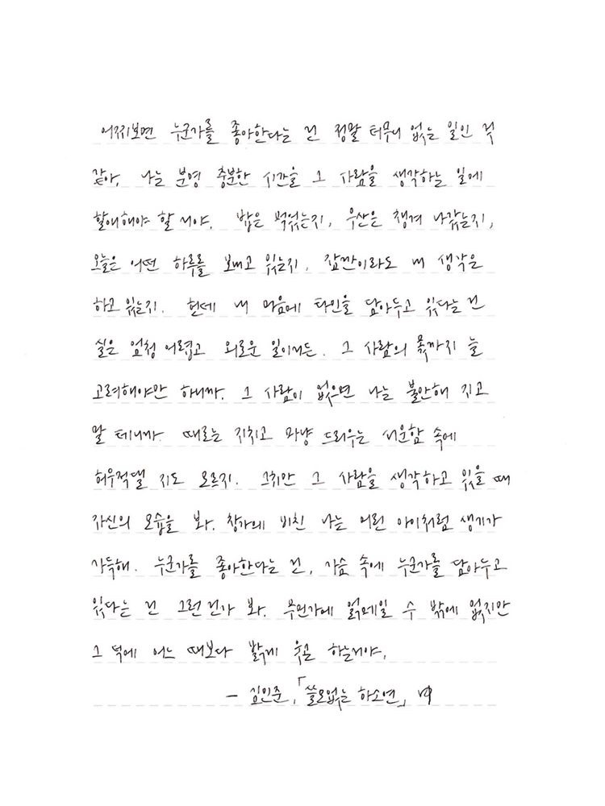

이젠 멀어져 기억 속으로 묻혀
사랑이란 무엇인가
- 사랑의 정의
- 내가 사랑하는것
- 내가 사랑하는 사람들
사랑이란 깊은 상호 인격적인 애정에서 단순한 즐거움까지를 아울러서 강하며 긍정적으로 경험된 감정적 정신적 상태이다.
즉 좋아하고 소중히 여기는 마음을 말한다. 대표적인 예로 모성애, 가족, 또는 연인에 대한 사랑을 들 수 있다.
넓은 의미에서는 사람 또는 동식물 이외의 대상, 즉, 조국이나 사물에 대한 사랑도 포함된다.
한국어의 명사 "사랑"의 옛말은 "다솜"이며, 동사 "사랑하다"의 옛말은 "괴다"이다. "괴다", "고이다"의 원뜻은 "생각하다"인데,
이는 사랑한다는 것이란, 곧 누군가를 끊임없이 생각하고 웃음이 난다 라는 뜻을 담고 있다. 인간의 감정 중 하나이기도 하다.
